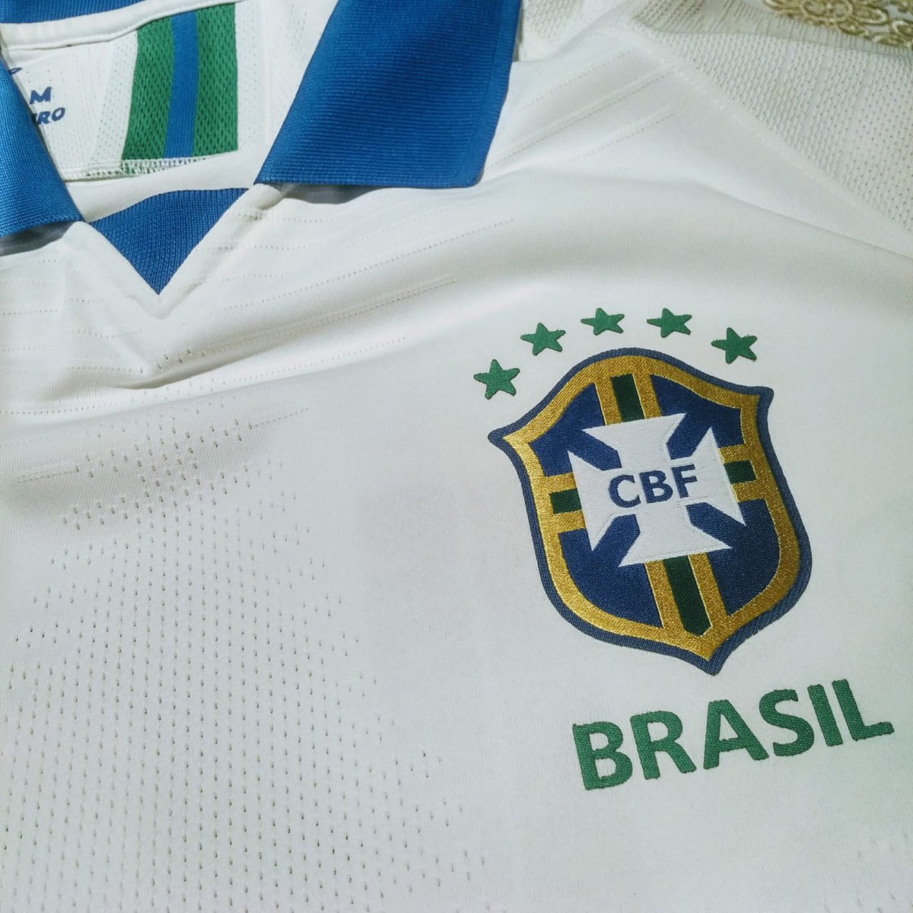
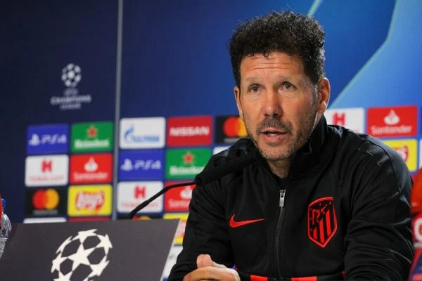
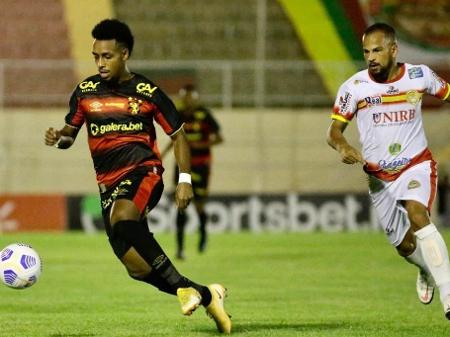
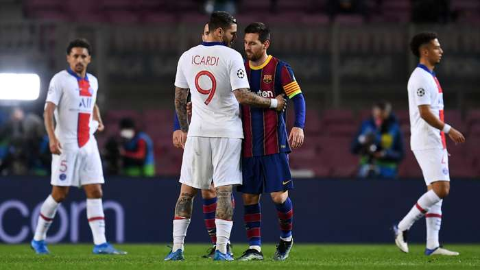
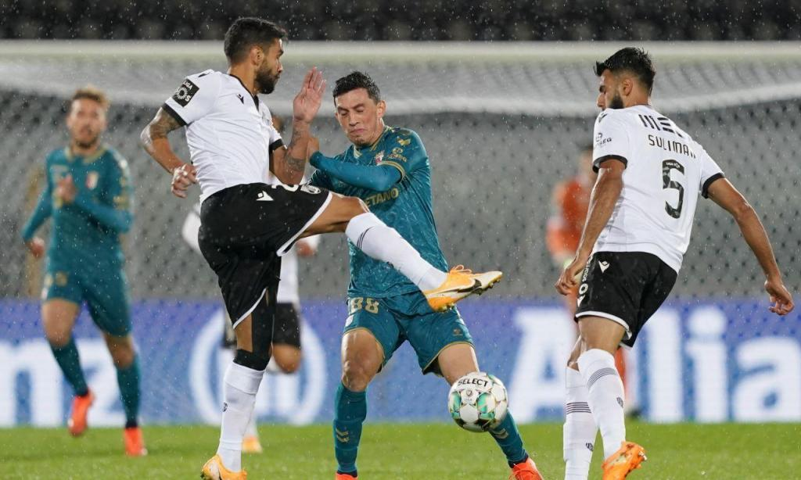
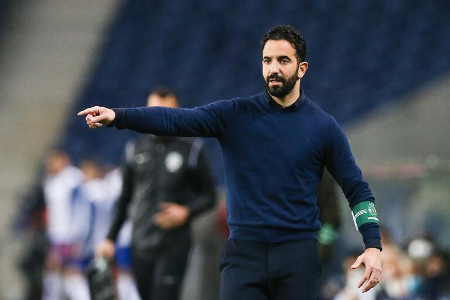

Mudança de planos com a CBF
Postado em 12 de abril de 2021 A Confederação Brasileira de Futebol mudou cinco partidas da Copa do Brasil de local devido às restrições de algumas cidades por conta da pandemia da Covid-19.
Leia MaisMais Longe possivel!!
Postado em 12 de abril de 2021 Atletico de Madrid Joga hoje contra o getafe jogo válido pelo campeonato Espanhol, o clube da capital esta a 6 pontos de diferança do Barcelona Clube da Catalunha
Leia MaisSport aciona STJD e pede exclusão da Juazeirense na Copa do Brasil
Postado em 12 de abril de 2021 O Sport acionou o Superior Tribunal de Justiça Desportiva e pede pela exclusão da Juazeirense da Copa do Brasil. O clube alega irregularidades na partida pela primeira fase da competição, que contou com queda de energia elétrica, sumiço de gandulas e terminou em derrota do Leão por 3 a 2. A informação foi confirmada pelo advogado do clube responsável pelo caso, Osvaldo Sestário.
Leia MaisApós denúncia de aglomeração, polícia encerra festa de aniversário de lateral do Inter
Postado em 14 de abril de 2021O laeral-esquerdo Moisés, do Inter, foi envolvido em uma polêmica na noite da última quinta-feira. Após receber uma denúncia de aglomeração, a Polícia Civil foi acionada e encerrou uma festa de aniversário na casa do pai do jogador, em um condomínio na Zona Sul de Porto Alegre. O evento foi organizado para comemorar o aniversário de 26 anos do atleta.
LeiaMaisInter B perde em São Luiz
Postado em 12 de abril de 2021O São Luiz escreveu história com uma vitória heróica por 2 a 1 sobre o Inter, nesta segunda-feira, no Beira-Rio, pela 3ª rodada do Gauchão. A equipe de Ijuí nunca havia batido o Colorado em seu estádio e não vencia o rival há 28 anos. Pois venceu e com um a menos. Hugo Almeida e Tiago Barbosa, já no último lance, marcaram os gols da vitória. Yuri Alberto fez o gol colorado.
Leia MaisPaulo victor Contestado
Postado em 12 de abril de 2021Revelado pelo Flamengo, Paulo Victor teve neste domingo (07/03) uma das piores noites de sua carreira. Atualmente no Grêmio, o goleiro que foi reserva em grande parte da última temporada, foi escalado como titular pelo técnico Renato Gaúcho nas finais da Copa do Brasil, mas acabou falhando nos dois gols do Palmeiras no jogo de volta da competição, vendo o time alviverde se sagrar campeão no Allianz
Leia MaisPortugues de Sucesso
Postado em 12 de abril de 2021Abel Ferreira celebrou título da Taça do Brasil e relembrou a ida para o Palmeiras: "Quem arrisca não petisca". Treinador emocionou-se a recordar família em Portugal após vencer o torneio este domingo.
Leia MaisSaiba as Escalações de Barcelona x Paris Sant-German
PSG x Barcelona se enfrentarão hoje em partida válida pelas oitavas de final da Liga dos Campeões. A partida acontecerá no Parc des Princes, às 17:00 (horário de Brasília).
LeiaMais Classico Minhoto
O Sp. Braga voltou a ser feliz no D. Afonso Henriques, algo recorrente nos últimos anos, ao vencer pela margem mínima (0-1) o sempre apetecível dérbi minhoto. Os bracarenses dominaram por completo a primeira metade e, mesmo quando as forças faltaram, resistiram perante um Vitória sem poder de fogo.
LeiaMais Novela "Taison"
Taison quer voltar, mas Inter não vê possibilidade de negociação
LeiaMaisIngleses de Olho no Rúben Amorim
A época do Sporting tem chamado à atenção não só do futebol nacional, mas também do restante futebol europeu, pelo que não é de estranhar que comecem a surgir interessados no trabalho que Rúben Amorim tem realizado à frente dos leões.
LeiaMais 